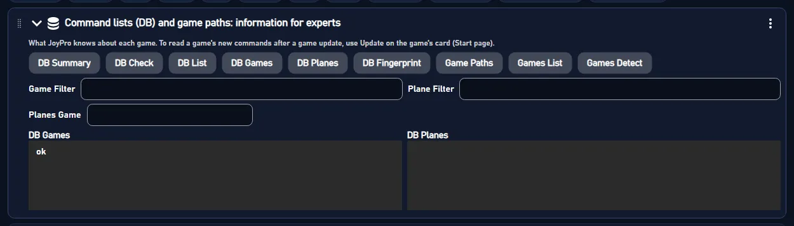

#Projekti leht
NuppkirjeldatudKohtspikker Avab komponendi ametliku väljalaskelehe sinu brauseris
Komponendi kaardil: avab sinu brauseris komponendi ametliku väljalaskelehe, kus selle enda projekt seda kirjeldab ja pakub allalaadimisi.
Leht Seaded sisaldab kõiki JoyPro seadeid 25 jaotises, mis avanevad ja sulguvad. Otsingukast leiab sätte sõna järgi („teavitusala“, „värskendus“, „fotod“), ülal olevad vahekaardid hüppavad jaotisesse ja jaotised saad panna oma järjekorda. Iga säte salvestatakse kohe ja säilib pärast taaskäivitust; nuppu Salvesta pole.


Esimesel käivitamisel on avatud ainult Mängud; kõik muu on ühe klõpsu kaugusel. Enamik inimesi vajab kunagi ainult jaotisi Mängud, Välimus, Keel ja JoyPro ja värskendused.
| Jaotis | Mida seal seadistad |
|---|---|
| Mängud | Millised mängud sul on, lingitud kaustad, mängu konfiguratsiooni jälgija, vJoy seade, mida JoyPro kasutab |
| Määrangud | Jälgi sisendit, alla vajutatuks jäävate nuppude salvestamine |
| Ringkäigud | Tervitus, abirežiim (F1) ja iga ringkäik, et uuesti alustada |
| Käivitus | Ava viimane profiil käivitamisel |
| Lehed alumisel ribal | Peida lehti, muuda nende järjekorda |
| Keel | JoyPro keel |
| Välimus | Hele, tume või sinu oma värvid, teksti suurus, liidese suurus, teemaredaktor |
| Töötamine taustal | Teavitusala abiprogramm, mis jätkab sinu mängude jälgimist |
| Kinnitused | Küsimused, mida JoyPro enne muudatust esitab |
| JoyPro ja värskendused | Versioon, projekti leht, värskendused |
| Privaatsus | Tootjate fotod, pildipakid, mängukaaned |
| Kasutusstatistika | Leht Statistika, sinu enim kasutatud õhusõidukite järjestus |
| Telemeetria salvestamine | Salvesta oma lende nagu Tacview |
| Joonised | Kuidas JoyPro sinu seadmeid joonistab; lähtesta oma paigutuse muudatused |
| Teata probleemist | Üks zip-fail kõigega, mida on vaja probleemi leidmiseks |
| Kohalik tehisintellekt | Valikuline keelemudel |
| Komponendid | vJoy, HidHide, ViGEmBus ja teised valikulised programmid |
| Seadmed | Sinu seadmed, nende nimed, seadme asendamine või eemaldamine |
| Käsuloendid (DB) ja mängude teed | Teave ekspertidele |
| DCS: vaikemäärangud | DCS-i enda vaikemäärangud DCS-i paigalduses |
| DCS-i, Star Citizeni ja IL-2 käsuloendid | Käsuloendite värskendused ekspertidele |
| Mängude force feedbacki seaded | Mängude enda force feedbacki valikud |
| DCS-i force feedback: vahetamine ja ümberpööramine | DCS-i force feedbacki suund seadme kohta |


Iga mängu kohta, mida JoyPro toetab ja mis sul on, üks kaart koos kaanepildiga, „Paigaldatud“ või „Pole paigaldatud“, kus see asub ja kus see oma juhtimisseadeid hoiab.
gui.vromfs.bin ja lang.vromfs.bin ainult lugedes lahti, et saada iga lennuki ja helikopteri toiming. Väljas: ainult JoyPro enda loend War Thunderi toimingutest, mida see tunneb.Siin ei muutu mängus midagi. Lingitud kaust määrab, kust import loeb ja kuhu eksport kirjutab; peidetud mäng ei saa ekspordikaarti ja seda ei jälgita.


Sinu vastus seadistusviisardi küsimusele Kas kasutate peajälgimist või VR-i? Peajälgimisega (TrackIR, näojälgimisega veebikaamera, Tobii silmajälgija) või VR-iga vaatad ringi pead pöörates.
Kõik JoyPro ringkäigud ühes kohas (Abirežiim ja ringkäigud):


Ava viimane profiil käivitamisel (vaikimisi sees) avab profiili, mis sul viimati avatud oli; tee on näidatud all. Märkus selgitab profiili ajalugu: iga muudatus salvestatakse ise ja iga salvestus on versioon jaotises Ajalugu (ülemine riba). Vanu versioone harvendatakse: kõik viimase päeva omad, seejärel üks tunnis 7 päeva jooksul, üks päevas 60 päeva jooksul ja pärast seda üks nädalas; kõige rohkem 200 MB profiili kohta ja 1 GB kokku. Versioonid, mille alles jätad, jäävad.


Alumise riba iga lehe kohta üks rida. Eemalda märge lehelt, mida sa ei kasuta; lohista rida selle pidemest (või kasuta nooli), et järjekorda muuta. Peidetud leht avaneb endiselt teistelt lehtedelt (näiteks Ava leht Modifikaatorid) ja on ribal näha, kuni see on avatud. Seadeid ei saa peita. Lähtesta vaikeväärtustele taastab JoyPro järjekorra, kus kõik lehed on näha.


JoyPro keel: inglise keel ja 38 muud keelt või Windowsi keel (Windowsi kuvakeel või inglise keel, kui JoyPro'l seda pole). Tõlked on tehtud masina abil ja võivad kõlada veidralt; mängu käsunimed jäävad nii, nagu mäng neid nimetab. Teavitusala abiprogrammi menüü järgib keelt.


JoyPro saab märgata, et muutsid mängus juhtimisseadeid, ainult siis, kui see töötab. Pärast JoyPro sulgemist jätkab väike abiprogramm jälgimist ikoonina teavitusalal; see ei kasuta märgatavalt protsessorit ja võtab paar MB mälu.


JoyPro küsib enne muudatust, mida on raske tagasi võtta. Siin on loetletud küsimused, mille saad välja lülitada: toimingu eemaldamine seosest, import, mis loobub muudatustest, mida sa pole veel eksportinud, esimene eksport mängu, kust profiil pole kunagi importinud, eksport, mis eemaldab määranguid, ja jälgija vihje impordis. Küsimus, mille lülitasid välja valikuga „Ära küsi uuesti“, on siin märkimata; Küsi kõike uuesti lülitab need kõik uuesti sisse.


Versioon, järk ja litsentsirida, Projekti leht ja Väljalaskeleht, kolmandate osapoolte teated ja värskendused: Otsi värskendusi, Paigalda värskendus (laadib uue versiooni alla, kontrollib seda, paigaldab selle ja taaskäivitab JoyPro), Otsi värskendusi käivitamisel ja Paku uuesti versiooni jaoks, mille vahele jätsid. „Kust värskendused tulevad (asjatundjatele)“ nimetab GitHubi hoidla, mille väljalaskeid JoyPro paigaldab.


JoyPro'l pole kontot ega telemeetriat. See läheb võrku ainult värskenduste kontrollimiseks, tootjate tootefotode jaoks (pärast sinu nõusolekut), sellest arvutist puuduvate mängukaante, valikulise tehisintellekti mudeli allalaadimise, valikuliste draiverite ja puuduva .NET Frameworki jaoks.


JoyPro märgib, milliseid mänge, õhusõidukeid ja laevu sa kasutad, mängude enda logidest ja Steami mänguajast, ning hoiab kokkuvõtet selles arvutis.


Salvestab iga raundi, missiooni või lennu kogu telemeetriaga, mida mäng saadab (asukoht, asend, kiirused, juhtimine, mootorid, relvad, sündmused), nagu Tacview teeb DCS-i jaoks, iga mängu puhul, mille telemeetriat JoyPro loeb.


Kuidas JoyPro joonistab sinu seadmeid lehel Paigutus ja seadmekaartidel (jooned või cel-shading, JoyPro värvid või sinu omad), eraldi ekraani ning spikrite ja eksportide jaoks. Lähtesta kõik minu paigutuse muudatused... taastab iga seadme pildi JoyPro vaikeseisu (sinu markerite asukohad, tabelid ja jooned, ümbernimetatud osad, fotod, oma seadmedefinitsioonid ja paigutusfailid, mida profiil kasutab; failid ise jäävad alles); kohe pärast seda toob Võta lähtestamine tagasi need tagasi. Ainult üks seade: leht Paigutus, selle menüü Mudel.... Joonistamise juhtelemente selgitab leht Paigutus.


Hoia taustalogisid n päeva (vaikimisi 30; kokku kõige rohkem 200 MB) ja Ava logikaust on all.


Valikuline. JoyPro võrguühenduseta reeglid töötavad alati; tasuta avatud lähtekoodiga keelemudel saab lisaks lugeda vabas vormis lauseid funktsioonides Halda tehisintellektiga, Muuda tehisintellektiga, JoyPro assistent ja Rühmita kirjelduse järgi ning JoyPro kontrollib iga vastust. See töötab selles arvutis ainult siis, kui seda kasutad.
llama-server.exe ja .gguf, Otsi sellest arvutist, Kasuta neid faile, Lõpeta nende kasutamine.


Vaata uuesti näitab kaarti iga ühendatud juhtkangi, gaasikangi ja pedaalide kohta ning iga seadme kohta, mida sinu profiil kasutab: selle pilt (klõpsa sellel, et avada seade lehel Paigutus), nimi, kas see on ühendatud või mitte ja mitu määrangut sellel on.


Ainult lugemiseks mõeldud vastused paneelil Väljund selle kohta, mida JoyPro igast mängust teab: DB kokkuvõte, DB kontroll, DB loend, DB mängud, DB lennukid, DB sõrmejälg, Mängude teed, Mängude loend, Mängude tuvastus, koos mängu ja õhusõiduki filtritega. Et lugeda pärast värskendust mängu uusi käske, kasuta Avalehel mängu kaardil nuppu Värskenda.


DCS paneb igale seadmele oma vaikemäärangud. JoyPro DCS-i eksport eemaldab need juba igast seadmest, kuhu see kirjutab, igas õhusõidukis. Siinsed kaks valikut muudavad DCS-i paigaldust ennast, kõigi seadmete jaoks; mõlemad on väljas, kuni sa need sisse lülitad.
<file>.nocombo.bak. Säilita UI-kihi vaikemäärangud (menüüd, VR) jätab UI-kihi nii, nagu see on.Need valikud muudavad DCS-i enda faile. Mõned mitmikmängu serverid ei lase sind sisse, kui need on sees; Taasta DCS-i failid paneb DCS-i failid tagasi. DCS-i värskendus või parandus toob originaalfailid tagasi; JoyPro lülitab valiku oma järgmisel käivitamisel uuesti sisse.


Tavaliselt luuakse mängu loend Avalehel selle kaardil nupuga Värskenda. Siin: ainult mõned DCS-i õhusõidukid, proovikäivitus ilma kirjutamata ja vana klõpsurežiim.


Iga force feedbacki säte, mida mäng pakub (tugevus, efektid, seadme kaupa ja DCS-is õhusõiduki kaupa). JoyPro salvestab sinu määratud väärtused profiili ja kirjutab need ekspordil mängu; seaded, mida sa ei salvesta, jäävad nii, nagu mängus on. Vali Mäng, Seade ja Õhusõidukid (Kõik õhusõidukid või üks õhusõiduk, mille väärtused võidavad), muuda väärtusi ja vajuta siis Rakenda. Taasta loobub rakendamata muudatustest, Eemalda real lõpetab ühe sätte salvestamise, Tühjenda eemaldab kõik näidatud salvestatud seaded. JoyPro enda telemeetria force feedback on lehel Force Feedback.


Kui sinu force feedbacki juhtkang lükkab DCS-is valele poole: märgi selle jaoks Vaheta telg, Pööra X või Pööra Y, seejärel vajuta Rakenda. Tühjenda annab seadmele tagasi DCS-i vaikeväärtused. Seadmete tabel filtritega (Ainult ühendatud, Ainult profiil), valikunupud ning Rakenda valitud / Tühjenda valitud / Tühjenda kõik; „Käsitsi üksik seade (täpsem)“ seab ühe seadme nime järgi.
DCS loeb force feedbacki suuna seadme kaupa käivitamisel: vahetatud või ümberpööratud seade lükkab igas õhusõidukis teisele poole.
%APPDATA%\JoyPro2\ui-settings.json (aken, lehed, avatud jaotised ja nende järjekord, teema, keel, kinnitused, privaatsusvastused, teavitusala, kohaliku tehisintellekti valikud ...), kirjutatakse iga muudatuse korral kohe; teemad JSON-failidena selle kõrval. Vaatemudel: MainWindowViewModel.SettingsPage.cs (jaotised, otsing, järjekord; SettingsSectionDefaults hoiab ID-sid, pealkirju ja otsingu märksõnu), juhtelemendid Views/Controls/SettingsSection.cs, SettingsSectionsPanel.cs, SettingsTabStrip.cs.engine games installs, engine games install set, engine games install disable, engine games config set kaudu (MainWindowViewModel.GameInstalls.cs, GameSetup.cs).MainWindowViewModel.NavPages.cs; välimus: MainWindowViewModel.Appearance.cs, Services/ThemeService.cs; keel: MainWindowViewModel.Language.cs (Lokaliseerimine).MainWindowViewModel.Updates.cs (Värskendused); aruanne: MainWindowViewModel.AppServices.cs, engine support bundle (Logimine).engine usage harvest, engine usage ranking, engine usage pin (Kasutusstatistika); telemeetria salvestamine: MainWindowViewModel.TelemetryRecording.cs, engine telemetry sessions, engine telemetry export (Telemeetria salvestamine).engine llm status, engine llm download, engine llm use-local, engine llm start (Rühmitamine loomulikus keeles); komponendid: MainWindowViewModel.Components.cs (Komponendid).engine devices list, engine devices inputs, engine devices exchange, engine devices remove, engine games devices (Seadmed).engine dcs strip-defaults, engine dcs device-luas, engine dcs defaults restore (MainWindowViewModel.DcsDefaults.cs); käsuloendid: engine dcs refresh id, engine dcs refresh clean, engine db refresh-starcitizen, engine db refresh-il2; eksperdi DB vastused: engine db summary, engine db check, engine db list, engine db games, engine db planes, engine db fingerprint, engine games paths, engine games list, engine games detect.engine ffb models, engine ffb show, engine ffb set, engine ffb clear (salvestatakse profiili, kirjutatakse ekspordil; MainWindowViewModel.FfbSettings.cs); DCS-i vahetamine/ümberpööramine: engine dcs ffb list, engine dcs ffb set, engine dcs ffb clear.Selle lehe taga olev funktsioonide dokumentatsioon, loodud hoidlast:
190 juhtelementi, loetud programmi lähtekoodist: 190 kirjeldatud, 0 lähtekoodi faktidega (kohtspikker, koodikommentaar, mootori kutse), 0 veel täiendamisel.
Kohtspikker Avab komponendi ametliku väljalaskelehe sinu brauseris
Komponendi kaardil: avab sinu brauseris komponendi ametliku väljalaskelehe, kus selle enda projekt seda kirjeldab ja pakub allalaadimisi.
Kohtspikker Paranda või desinstalli: avab Windowsi paigaldatud rakenduste loendi, kus on komponendi enda desinstallija
Paigaldatud komponendi kaardil: avab Windowsi paigaldatud rakenduste loendi.
Paranda või desinstalli komponent seal selle enda desinstalliga; JoyPro ise komponente ei eemalda.
Komponendi kaardil: avab sinu brauseris komponendi litsentsi selle ametlikul projektilehel.
Märgi see, et öelda jah. Siis võib JoyPro abilise paigaldada.
Märgi see, et öelda jah: JoyPro võib selle tasuta abilise alla laadida ja paigaldada.
Paigalda töötab ainult siis, kui see on märgitud.
Laadib alla ja paigaldab selle tasuta abilise. Kõigepealt märkida kast.
Laadib alla ja paigaldab selle tasuta abilise: Paigalda koos komponendi nimega.
See töötab ainult pärast märget "Olen lugenud ...", nii et märgi see kast kõigepealt.
Kuvatakse komponendi allalaadimise ajal: peatab allalaadimise.
Juba töötavat paigaldajat JoyPro ei peata; kasuta selle enda aknas nuppu Tühista.
Kohtspikker Sees: toimingu x küsib esmalt „Kas eemaldada see toiming?“. Väljas: see eemaldatakse kohe (Ctrl+Z võtab tagasi).
Sees: toimingu x lehel Seosed küsib enne "Kas eemaldada see toiming?".
Väljas: toiming eemaldatakse kohe; Ctrl+Z võtab selle ikka tagasi.
Kohtspikker Sees: mängukaardi Impordi küsib enne, kui profiilis on selle mängu jaoks muudatusi, mida mängus veel pole (Ekspordi enne, Impordi, Tühista). Väljas: import tehakse kohe (Ajalugu toob muudatused tagasi).
Sees: Impordi mängukaardil küsib enne, kui sinu profiilis on selle mängu jaoks muudatusi, mida mängus veel pole, valikutega Ekspordi enne, Impordi ja Tühista.
Väljas: see impordib kohe; profiili Ajaloos on endiselt eelnev versioon.
Sees: mängu esimene eksport, kust see profiil pole kunagi importinud, küsib "Impordi enne?", nii et mängu enda määrangud ei lähe ootamatult kaotsi.
Väljas: see ekspordib kohe.
Sees: eksport, mis eemaldab määranguid, küsib üks kord enne kirjutamist.
Väljas: see kirjutab kohe.
Sees: import näitab vihjet, et JoyPro saab jälgida mängu juhtimise muudatuste suhtes, mida teed mängus.
Väljas: vihje on peidetud.
Kohtspikker Iga küsimus, mille välja lülitasid, küsitakse jälle
Märgib uuesti selle jaotise iga küsimuse, nii et JoyPro küsib nüüdsest igaüht uuesti.
Lubatud ainult siis, kui vähemalt üks küsimus on välja lülitatud.
Kohtspikker Lülitab kohaliku tehisintellekti sisse seadistatud mudeliga; see laaditakse järgmise päringuga
Sildil "Kohalik tehisintellekt" tehisintellekti toimingute kõrval, kuvatakse, kui mudel on seadistatud, kuid välja lülitatud: lülitab kohaliku tehisintellekti selle mudeliga ühe klõpsuga sisse; see laaditakse sinu järgmise päringuga.
Ilma mudelita avab see selle asemel jaotise Seaded > Kohalik tehisintellekt.
Kohtspikker Avab Seaded > Kohalik tehisintellekt: laadi mudel alla (kõigepealt suurus ja litsents) või kasuta oma llama.cpp-d
Seadista kohalik tehisintellekt sildil "Kohalik tehisintellekt": avab jaotise Seaded > Kohalik tehisintellekt ja kerib selleni, kus saad mudeli alla laadida või suunata JoyPro sinu enda llama.cpp-le.
Ise ei muuda midagi.
Kohtspikker Lõpetab kohaliku tehisintellekti mudeli kohe ja vabastab selle mälu (järgmine päring laadib selle uuesti)
Peata kohe, kuvatakse, kui kohaliku tehisintellekti mudel on laaditud: lõpetab mudeli kohe ja vabastab selle mälu.
Kohalik tehisintellekt jääb sisse lülitatuks; järgmine tehisintellekti päring laadib mudeli uuesti.
Kohtspikker Sees: kui allolev mäng töötab ja saadab telemeetriat, kirjutab JoyPro ühe faili vooru, missiooni või lennu kohta. Väljas: midagi ei salvestata ega otsita.
Vaikimisi väljas. Sees: kui märgitud mäng töötab ja saadab telemeetriat, kirjutab JoyPro alltoodud kausta ühe salvestuse iga vooru, missiooni või lennu kohta.
Väljas: midagi ei salvestata ja JoyPro ei otsi töötavaid mänge.
Kohtspikker Kuhu salvestused lähevad, mis tahes draivil (vaba ruumiga draiv: tund on umbes 10 kuni 50 MB)
Kaust > Vali...: valib, kuhu uued salvestused lähevad, mis tahes kettal.
Loend Salvestatud seansid näitab siis selle kausta salvestusi; olemasolevaid salvestusi ei teisaldata.
Kohtspikker Tagasi JoyPro andmekausta
Kuvatakse, kui valisid oma kausta: uued salvestused lähevad jälle JoyPro andmekausta ja loend näitab sealseid salvestusi.
Sinu kaustas olevad salvestused jäävad sinna, kus need on.
Avab salvestuste kausta Exploreris.
Kohtspikker Mängu enda paketid, vastused ja failid väärtuste kõrval, neid lugevate tööriistade jaoks. Umbes kaks korda suurem.
Vaikimisi sees: iga salvestus hoiab väärtuste kõrval ka mängu enda pakette, vastuseid ja faile tööriistade jaoks, mis neid loevad.
Salvestus on siis umbes kaks korda suurem.
Üks telemeetria salvestuse mäng: märgitud mänge salvestatakse, kui need töötavad ja telemeetriat saadavad.
Allolev rida ütleb, mida JoyPro selle mängu puhul kuulab.
Loeb salvestatud seansside loendi salvestuste kaustast uuesti.
Kohtspikker .zip.acmi fail, mille Tacview avab: trajektoor, asend, kiirused ja teised objektid, mida mäng teatas. Ainult mängudele, mille telemeetrial on positsioon.
Kirjutab valitud salvestuse .zip.acmi-failina, mida Tacview avab, salvestuste kõrval olevasse kausta Exports ja näitab seda Exploreris.
Ainult mängudele, mille telemeetrias on asukoht.
Kohtspikker Kaust, kus on üks tabel iga hetke kõigi väärtustega, sündmused, kanalite loend ja üks väike fail kanali kohta (komadega eraldatud, kümnendpunkt).
Kirjutab valitud salvestuse CSV-failide kaustana salvestuste kõrval olevasse kausta Exports: üks tabel iga hetke kõigi väärtustega, sündmused, kanalite loend ja üks väike fail iga kanali kohta.
Explorer avab kausta.
Kustutab valitud salvestuse.
x väljal Otsi seadetest: tühjendab otsingu, nii et kõik jaotised on jälle näha.
Avab lehe Seaded kõik jaotised.
Järgmiseks käivitamiseks jäetakse meelde, millised jaotised on avatud.
Sulgeb kõik jaotised, nii et leht näitab ainult nende pealkirju; ava vajalik jaotis sellel klõpsates.
Väike nool valikute Ava kõik / Sulge kõik kõrval: paneb jaotised tagasi JoyPro järjekorda, avatud on ainult Mängud.
Uus järjekord jäetakse järgmiseks käivitamiseks meelde.
Kohtspikker Heledad värvid
Näitab JoyPro't kohe heledates värvides.
Jäetakse järgmiseks käivitamiseks meelde.
Kohtspikker Tumedad värvid
Näitab JoyPro't kohe tumedates värvides.
Jäetakse järgmiseks käivitamiseks meelde.
Kohtspikker Järgi Windowsi seadet
JoyPro järgib rakenduste jaoks Windowsi sätet.
Jäetakse järgmiseks käivitamiseks meelde.
Kohtspikker Näita JoyPro't selles teemas
Kasuta mõnel sinu enda teemal: näitab JoyPro't kohe selles teemas.
Jäetakse järgmiseks käivitamiseks meelde.
Kohtspikker Ava see allolevas teemaredaktoris
Muuda mõnel sinu enda teemal: avab selle koopia allolevas teemaredaktoris.
Midagi ei muutu enne, kui vajutad Salvesta või Kasuta seda teemat.
Kohtspikker Teema teksti suurus või 100%
Lähtesta valiku Teksti suurus kõrval: loobub sinu valitud teksti suurusest, nii et kehtib jälle kasutatava teema teksti suurus või 100 %, kui teemal seda pole.
Kohtspikker Tagasi 100% peale
Lähtesta valiku Liidese suurus kõrval: kogu aken läheb tagasi 100 % peale.
Teemaredaktor: alustab uut teemat JoyPro heledatest värvidest ja avab selle redaktoris koos reaalajas eelvaatega.
See salvestatakse failina ainult nupuga Salvesta või Kasuta seda teemat.
Teemaredaktor: alustab uut teemat JoyPro tumedatest värvidest ja avab selle redaktoris.
Kohtspikker Teemafail (.json), mida keegi sinuga jagas
Teemaredaktor: valib teemafaili, mida keegi sinuga jagas.
JoyPro kontrollib seda, kopeerib selle oma teemade kausta ja avab selle redaktoris; redaktori kohal olev rida ütleb, mis imporditi või miks mitte.
Teemaredaktori reaalajas eelvaate osa: näidisnupp, mis näitab, kuidas nupud muudetavas teemas välja näevad.
See ei tee midagi.
Teemaredaktori reaalajas eelvaate osa: rõhuvärviga näidisnupp.
See ei tee midagi.
Teemaredaktori reaalajas eelvaate osa: keelatud näidisnupp.
See ei tee midagi.
Teemaredaktori reaalajas eelvaate osa: alumise riba näidislehe nupp.
See ei tee midagi.
Teemaredaktori reaalajas eelvaate osa: valituna näidatud näidislehe nupp.
See ei tee midagi.
Teemaredaktori reaalajas eelvaate osa: alumise riba näidislehe nupp.
See ei tee midagi.
Kohtspikker Muudab tekstivärvid heledamaks või tumedamaks, kuni kogu tekst on loetav
Kuvatakse, kui kontrastikontroll leiab raskesti loetavaid tekste: teeb muudetava teema tekstivärvid heledamaks või tumedamaks, kuni iga tekst on loetav, ja ütleb, mitu värvi muutus.
Salvestatakse ainult nupuga Salvesta või Kasuta seda teemat.
Kohtspikker Salvestab selle ja näitab JoyPro't selles
Salvestab muudetava teema ja näitab JoyPro't kohe selles.
Jäetakse järgmiseks käivitamiseks meelde.
Salvestab muudetava teema failina JoyPro seadete kausta.
Kui see on kasutusel olev teema, näitab aken muudatust kohe.
Teeb muudetavast teemast koopia ja avab koopia redaktoris, et teha meeldivast teemast variant.
Kohtspikker Salvesta teema failina, et seda jagada
Salvestab muudetava teema .json-failina sinu valitud kohta, et hoida koopiat või seda jagada; teised laadivad selle valikuga Impordi....
Kohtspikker Kõik värvid tagasi teema järgi, millel see põhineb, ja fondid tagasi JoyPro omadeks
Paneb muudetava teema iga värvi tagasi teemale, millel see põhineb; ka fondid lähevad tagasi JoyPro omadele.
Nimi jääb ja teemafail muutub ainult nupuga Salvesta või Kasuta seda teemat.
Kustutab muudetava teema faili. Kui see oli kasutusel olev teema, läheb JoyPro tagasi sisseehitatud teemale.
Kohtspikker Esmakäivituse häälestus: millised mängud sul on, seotud kaustad (kaasaskantavad paigaldused) ja konfiguratsiooni asukohad
Otsib sinu mänge uuesti ja avab esimese käivituse akna: märgi mängud, mis sul on, lingi kaasaskantavate paigalduste kaustad ja määra teised konfiguratsiooni asukohad.
Midagi ei muutu enne, kui vajutad seal Valmis.
Otsib sinu mänge uuesti, näiteks pärast seda, kui paigaldasid või teisaldasid mängu, ning värskendab siinseid kaarte, Avalehte ja lehte Ekspordi.
Kohtspikker Kui muudad mängus juhtimist, mida JoyPro haldab, küsib JoyPro pärast mängu sulgemist, kas võtta need sinu profiili
Vaikimisi sees: kui muudad mängu sees juhtimist, mida JoyPro haldab, märkab JoyPro seda pärast mängu sulgemist ja küsib, kas võtta muudatused sinu profiili.
Jälgitakse mänge, kuhu oled eksportinud või kust importinud ja mis on Avalehel jälgimiseks märgitud.
Kohtspikker Sees (vaikimisi): JoyPro pakib lahti gui.vromfs.bin ja lang.vromfs.bin (ainult lugemine) iga õhusõiduki ja helikopteri toimingu jaoks. Väljas: JoyPro kasutab ainult oma loendit War Thunderi toimingutest, mida ta tunneb.
Vaikimisi sees: kui JoyPro ehitab War Thunderi käskude loendit, pakib see lahti mängu gui.vromfs.bin ja lang.vromfs.bin iga lennuki ja helikopteri toimingu jaoks.
Väljas: JoyPro kasutab ainult oma loendit War Thunderi toimingutest, mida ta tunneb.
Kohtspikker HLL Vietnami failid on Oodle'iga tihendatud ja mäng ei tarni oma Oodle'i teeki. Sinu jah-vastuse korral kasutab JoyPro teeki, mille sellel arvutil mõni teine mäng kaasa annab (sealt, kus see asub, kunagi kopeerimata). Väljas: JoyPro enda puldiklahvide loend, mis on Xboxi puldi režiimile täiesti piisav.
Sinu vastus küsimusele, mida JoyPro küsib Hell Let Loose: Vietnam'i käskude loendi ehitamisel: märgituna loeb JoyPro mängu tihendatud faile Oodle'i teegiga, mis on kaasas mõne teise paigaldatud mänguga, sealt, kus see asub.
Märkimata: JoyPro enda mängupuldi klahvide loend, mis on kõik, mida Xboxi puldi režiim vajab.
Unustab sinu vastuse Hell Let Loose: Vietnam'i failide kohta; JoyPro küsib uuesti järgmisel korral, kui ehitab selle mängu käskude loendi.
Kohtspikker See kaust loetakse siis mängu paigalduseks (mängu kaust, selle käivitaja kaust või bin-kaust)
Vali kaust... mängukaardil: lingib mängu kausta.
Ka käivitaja või bin-kaust sobib; JoyPro lingib selle jaoks mängu kausta.
Kohtspikker Vali mängu .exe või selle käivitaja; JoyPro seob mängu kausta
Vali .exe... mängukaardil: vali mängu programm või selle käivitaja; JoyPro lingib selle jaoks mängu kausta, nagu Vali kaust....
Kohtspikker Unusta oma kaust ja tuvasta mäng uuesti
Kasuta tuvastatut sinu enda kaustaga mängukaardil: unustab lingi, nii et JoyPro tuvastab mängu jälle ise.
Mängu faile ei puudutata.
Kohtspikker Sul pole seda või see ei huvita: peidetud kõikjal JoyPros (kaardid, eksport, jälgija, mängude loendid); loetakse paigaldamata olevaks. Sinu määrangud selle jaoks säilivad.
Peida mängukaardil: mängu jaoks, mida sul pole või mis sind ei huvita.
See peidetakse JoyPros kõikjal ja loetakse paigaldamata mänguks; sinu määrangud selle jaoks jäävad profiili.
Kohtspikker Vajuta nuppu (või liiguta telge pikalt) ja leht Määrangud või Seosed hüppab selle seosele; vajuta uuesti, et minna selle järgmisele seosele, esmalt ilma modifikaatoriteta. Mitte salvestamise ega kastis kirjutamise ajal.
Vaikimisi sees: vajuta nuppu ja leht Määrangud või Seosed hüppab selle seosele; vajuta uuesti, et minna selle järgmisele seosele, modifikaatoriteta seosed enne.
Mitte salvestamise või kasti kirjutamise ajal ja ainult siis, kui JoyPro aken on esiplaanil.
Kohtspikker Lühike märkus loendi allosas (BTN 8 seadmel WarBRD: Gear) pärast sisendi jälgimise hüpet. Loend hüppab ka siis, kui see on väljas.
Vaikimisi väljas: pärast seda, kui sisendi jälgimine hüppas, ütleb lühike märkus loendi allosas, mida vajutati.
Loend hüppab sellega või ilma.
Kohtspikker Salvesta sisend võtab ainult nupu, mille olek muutub; nuppu, mis oli salvestuse algul juba all (3-asendilüliti keskmine asend, režiimilüliti), ei arvestata kunagi. Märgitud: selle lahtilaskmist arvestatakse selle nupuna.
Vaikimisi väljas: salvestamine võtab ainult nupu, mille olek muutub, nii et nupp, mis oli salvestamise alguses juba all, ei loe kunagi.
Märgituna loetakse sellise nupu lahtilaskmine selleks nupuks.
Kohtspikker Sees: nime vastete all tulevad Sama funktsioon (sama funktsioon, leitud sünonüümi või kirjelduse järgi) ja Seotud (kokku volditud). Väljas: ainult toimingud, mille nimes on iga kirjutatud sõna. Sama lüliti on ka Kõik / Teljed / Nupud kõrval.
Seaded > Seosed, vaikimisi sees: otsing Lisa toiminguid loetleb ka toimingud, mis teevad seda, mida sinu sõnad tähendavad, ja lõdvemad vasted, toimingute all, mille nimes on iga sinu kirjutatud sõna.
Väljas: ainult need nimevasted.
Vali see, kui vaatad ringi pead liigutades.
Vali see, kui vaatad ringi peajälgimise, Tobii silmajälgija või VR-iga või kavatsed selle hankida.
Iga hilisem seadistus ei pane siis lennusimulaatorites sinu HOTAS-ile vaate- ega vaatamisnuppe, ainult nupu vaate tsentreerimiseks, nii et sinu nupud jäävad vabaks muudele funktsioonidele.
Vali see, kui vaatad ringi juhtkangi Hatiga.
Vali see, kui vaatad ringi juhtkangi või gaasikangiga.
Iga hilisem seadistus paneb ringi vaatamise kõrge prioriteediga Hatile või pöidlakangile: kohe pärast kahurit, relva vabastust, vastumeetmeid, pidureid, trimmi ja sihtmärki.
Kohtspikker Avab nende simulaatorite seadistusviisardi
Seadistab sinu simulaatorid uue vastuse järgi uuesti.
Kuvatakse pärast vastuse muutmist: avab seadistusviisardi paigaldatud simulaatorite jaoks, mida vastus puudutab, et ringi vaatamine seal uuesti seadistada.
Sinu profiil muutub alles siis, kui rakendad uue plaani.
Näitab või peidab selle lehe alumisel ribal.
Peidetud leht avaneb ikka teistelt lehtedelt ja on avatuna nähtav.
Liigutab selle lehe loendis ühe koha võrra üles, mis on alumisel ribal ühe koha võrra vasakule.
Järjekord jäetakse järgmiseks käivitamiseks meelde.
Liigutab selle lehe loendis ühe koha võrra alla, mis on alumisel ribal ühe koha võrra paremale.
Kohtspikker JoyPro lehtede järjekord, kõik lehed kuvatud
Paneb alumise riba lehed tagasi JoyPro järjekorda ja näitab jälle kõiki lehti.
Kohtspikker Esimese käivituse küsimus: mida sa teha tahad ja milline ringkäik sobib
Näitab tervitust uuesti koos kõigi ringkäikudega.
Näita tervitust avab uuesti esimese käivituse küsimuse: mida sa teha tahad?
Vali vastus ja JoyPro alustab sulle sobivat ringkäiku või kiirseadistust.
Kohtspikker Klõpsa mis tahes asjal, et näha, mida see teeb; F1 või Esc lõpetab selle
Kõigepealt see, siis mis tahes nupp: abi ütleb, mida see teeb.
Abirežiim lülitab abirežiimi sisse: klõps mis tahes nupul, väljal, loendireal või vahekaardil ei käivita seda enam, vaid näitab, mida see teeb.
F1, Esc või ülaosas olev Lõpeta abirežiim lõpetab selle.
Kohtspikker Tervitus kuvatakse järgmisel käivitamisel uuesti ja ühtki ringkäiku ei loeta vaadatuks
Tervitus tuleb järgmisel käivitamisel tagasi.
Küsi uuesti järgmisel käivitamisel paneb tervituse uuesti kuvama järgmisel korral, kui JoyPro käivitub.
Iga ringkäiku loetakse jälle nägemata; sinu profiil ja muud seaded jäävad nii, nagu on.
Kohtspikker Suur tekst ja väga lühikesed laused ringkäikudes ja abis. Hea lastele ja kõigile, kes tahavad lihtsalt.
Suur tekst ja lühikesed laused ringkäikudes ja abis.
Lihtsad sõnad: suured kaardid ja kõige lühemad tekstid ringkäikudes ning F1-abi algab ühe lihtsa lausega, üksikasjad on nupu Rohkem üksikasju taga.
Salvestatakse kohe; jääb alles ka pärast taaskäivitust.
Kohtspikker Allolevad ringkäigud näitavad ainult vajalikke samme
Ainult kõige olulisem: alltoodud loendist alustatud ringkäik näitab ainult vajalikke samme.
Lisad, nagu fiksaatori režiim DCS-i ringkäigus, jäetakse välja.
Kohtspikker Allolevad ringkäigud näitavad iga sammu, ka lisasid
Kõik funktsioonid: alltoodud loendist alustatud ringkäik näitab iga sammu, ka lisasid.
Sinu valik jääb pärast taaskäivitamist alles.
Kohtspikker Alustab seda ringkäiku
Alustab seda ringkäiku.
Alusta ringkäiku alustab seda ringkäiku: see tumendab akna, paneb nupu, millest räägib, helendama ja ootab sinu klõpsu.
Kiire ringkäik näitab, kus hiljem nuppu muuta; kiirseadistus ise on Avalehel olev Seadista kõik minu eest.
Kohtspikker JoyPro avab profiili, mis sul viimati avatud oli, kohe pärast akna ilmumist. Võta märge maha, et alustada ilma avatud profiilita.
Vaikimisi sees: JoyPro avab profiili, mis sul viimati avatud oli, kohe pärast akna ilmumist; selle tee on näidatud allpool.
Märkimata: JoyPro käivitub ilma avatud profiilita.
Kohtspikker Teavitusala abiline käivitub ise, kui logid Windowsi sisse; JoyPro aken ei avane. Administraatoriõigusi pole vaja; võta märge maha, et see Windowsi käivitusest uuesti eemaldada.
Vaikimisi väljas. Sees: väike teavitusala abiline käivitub ise, kui logid Windowsi sisse, ja jälgib sinu mänge; JoyPro aken ei avane.
Märkimine märgib ka valiku Sulge teavitusalale.
Kohtspikker JoyPro sulgemine (X) jätab teavitusala abilise sinu mänge jälgima. Võta märge maha ja JoyPro sulgemine lõpetab ka jälgimise.
JoyPro sulgemine annab mängude jälgimise üle teavitusala abilisele, mis jääb teavitusalale mõne MB mäluga.
Märkimine käivitab abilise kohe.
Kohtspikker JoyPro GitHubis: lähtekood, väljalasked, veateated
Avab sinu brauseris JoyPro projektilehe GitHubis: lähtekood, väljalasked ja probleemiteated.
Kohtspikker Iga väljalase koos muudatustega
Avab sinu brauseris JoyPro väljalasked GitHubis: iga väljalase koos muudatustega.
Kohtspikker Küsib GitHubilt JoyPro viimast väljalaset; uuem pakutakse koos muudatustega
Küsib GitHubist JoyPro uusima väljalaske ja ütleb alati, mida leidis: uuemat versiooni pakutakse koos muudatuste loeteluga, muidu "JoyPro2 on ajakohane".
Vahele jäetud versiooni pakutakse siin samuti.
Kohtspikker Laeb uue versiooni alla, kontrollib seda, paigaldab selle ja käivitab JoyPro uuesti
Pärast seda, kui kontroll leidis uuema versiooni: laadib selle alla, kontrollib allalaadimist, sulgeb JoyPro, paigaldab uue versiooni ja käivitab JoyPro uuesti, edenemine on näha värskendusaknas.
Sinu profiilid ja seaded jäävad.
Kohtspikker Igal käivitamisel küsib JoyPro GitHubilt ühe korra, kas on uuem versioon, ja küsib sinult enne värskendamist
Vaikimisi sees: igal käivitamisel küsib JoyPro GitHubist üks kord, kas on uuem versioon, ja näitab pakkumist ainult siis, kui see on olemas.
See ei värskenda kunagi ilma sinu klõpsuta.
Valisid värskenduse pakkumises "Jäta see versioon vahele": see unustab selle, nii et järgmine kontroll pakub versiooni uuesti.
Kohtspikker Unusta iga seadme kohta antud jah / ei; JoyPro küsib uuesti, enne kui tootja fotot näitab
Unustab iga seadme kohta antud jah- või ei-vastuse tootja tootefoto kohta, nii et JoyPro küsib uuesti, enne kui mõne alla laadib.
Kõrvalolev rida loeb sinu vastused kokku.
Kohtspikker Kui ilmub seade, mille viitefotosid selles arvutis pole, laadib JoyPro need taustal algselt aadressilt (või veebiarhiivist, kui aadressi enam pole), kontrollib iga foto ja hoiab selle sinu andmekaustas. Väljas: JoyPro pakub neid ja ootab sinu klõpsu.
Sees: kui ilmub seade, mille viitefotosid selles arvutis pole, laadib JoyPro need taustal algsest aadressist alla, kontrollib igaüht ja hoiab neid sinu andmekaustas.
Väljas: JoyPro pakub neid ja ootab sinu klõpsu.
Kohtspikker Mängude kaaned, mille pilti Steamil sellel arvutil pole, laaditakse korra alla Steami poest või kirjastaja saidilt (mootori meediaallikad). Väljas: JoyPro märgid ja sellel arvutil juba olevad pildid. Jõustub järgmisel käivitamisel.
Mängude kaanepildid, mille kohta Steamil selles arvutis pilti pole, laaditakse üks kord alla Steami poest või väljaandja saidilt.
Väljas: JoyPro märgid ja selles arvutis juba olevad pildid.
Kohtspikker Tunde mängu, õhusõiduki ja laeva kohta, top 10, seeriad, allatulistamised, maandumised, hüpped, sinu profiil ajas ja lõbusaid fakte
Vaikimisi väljas: näitab alumisel ribal lehte Statistika, kus on tunnid mängu, õhusõiduki ja laeva kohta, top 10, järjestikused päevad, tapmised, maandumised, hüpped, sinu profiil aja jooksul ja lõbusad faktid.
Jäetakse järgmiseks käivitamiseks meelde.
Kohtspikker Automaatne määramine, Automaatne rühmitamine, Seadistusviisard ja Paiguta tehisintellektiga annavad õhusõidukile, millega sa pole veel lennanud, oma klassi enim kasutatud õhusõiduki paigutuse (reaktiivlennukid, helikopterid, kosmoselaevad). Kinnita allpool õhusõiduk, et teha see mudeliks.
Vaikimisi sees: Automaatne määramine, Automaatne rühmitamine, Seadistusviisard ja Paiguta tehisintellektiga annavad õhusõidukile, millega sa pole veel lennanud, sinu selle klassi enim kasutatud õhusõiduki paigutuse; allolev Kinnita valib eeskuju.
Väljas: nad paigutavad selle ilma selle eeskujuta.
Loeb, mida sinu mängud on pärast viimast korda logisse kirjutanud, ning värskendab edetabelit ja lehte Statistika.
Tavaliselt juhtub see käivitamisel ja pärast mängu sulgemist.
Kinnita / Vabasta edetabeli real: kinnitatud õhusõiduk on oma klassi uute õhusõidukite eeskuju, kui Automaatne määramine, Automaatne rühmitamine, Seadistusviisard või Paiguta tehisintellektiga mõne õhusõiduki paigutab.
Mängus: pärast seda paigutatud õhusõidukid saavad kinnitatud õhusõiduki nupupaigutuse.
Välista / Kaasa real: välistatud õhusõiduk või mäng ei loe enam edetabelis.
Paneb iga seadme pildi tagasi JoyPro vaikeseisu: sinu markerite asukohad, tabelid ja jooned, ümbernimetatud osad, fotod, enda seadmedefinitsioonid ja paigutusfailid, mida profiil kasutab.
Küsib enne; kohe järel Võta lähtestamine tagasi toob kõik tagasi.
"Võta lähtestamine tagasi": paneb tagasi paigutuse muudatused, mille viimane lähtestamine ära võttis.
Kuvatakse ainult kohe pärast lähtestamist.
Vaikimisi sees: Loo aruanne paneb zip-faili ka sinu avatud profiili, selle ajaloo ja mängude praegused määrangufailid, mis aitab probleemi leidmisel kõige rohkem.
Väljas: aruanne jätab need välja.
Näitab enne, mis läheb aruandesse, seejärel salvestab selles arvutis ühe zip-faili sinu tekstiga väljalt Mis juhtus? ja sellega, mis on vajalik probleemi leidmiseks, ning valib selle Exploreris.
Sinu kasutajakaust ja nimi asendatakse, e-posti aadressid ja paroolid eemaldatakse; midagi ei saadeta.
Näitab Exploreris valituna zip-faili, mille Loo aruanne tegi, et see manustada või seda enne vaadata.
Avab sinu brauseris JoyPro GitHubi lehel uue probleemiteate, kuhu sinu kirjeldus on täidetud; lohista aruande zip-fail seal teate tekstikasti.
JoyPro ise ei laadi midagi üles.
Avab Exploreris JoyPro logikausta: GUI ja mootori taustalogid ning paneeli Väljund seansilogi.
Lülitab valikulise kohaliku tehisintellekti mudeli kõigi tehisintellekti toimingute jaoks sisse või välja.
Väljas: ainult JoyPro võrguühenduseta reeglid, mis töötavad alati.
Kohtspikker Laadib mudeli kohe, et sinu järgmine tehisintellekti päring saaks kohe vastuse (see peatub pärast jõudeoleku minuteid)
Laadib kohaliku tehisintellekti mudeli kohe, nii et sinu järgmine tehisintellekti päring vastab kohe; see peatub jälle pärast jõudeoleku minuteid.
Vajab, et kohalik tehisintellekt oleks sisse lülitatud ja valmis; muidu ütleb olekurida, miks.
Küsib mootorilt uuesti, mis on seadistatud ja töötab, ning värskendab olekuridu.
Sinu nõusolek ülal näidatud allalaadimise suuruse ja litsentsidega valitud mudeli ja llama.cpp jaoks.
Laadi alla ja lülita sisse töötab ainult siis, kui see on märgitud.
Kohtspikker Laeb alla llama.cpp ja mudeli, kontrollib SHA-256 kontrollsummasid ja lülitab kohaliku tehisintellekti mudeli sisse
Laadib alla llama.cpp ja valitud mudeli, kontrollib nende SHA-256 kontrollsummasid ja lülitab kohaliku tehisintellekti sisse, edenemine on näha allpool.
Töötab ainult siis, kui Nõustun ülaltoodud suuruse ja litsentsidega on märgitud.
Peatab käimasoleva mudeli allalaadimise. Juba alla laaditud osa säilitatakse; Laadi alla ja lülita sisse jätkab seda.
Kustutab valitud allalaaditud mudeli sellest arvutist, et ruumi vabastada.
Valib sinu enda llama-server.exe. Seejärel vajuta Kasuta neid faile.
Valib sinu enda .gguf-mudelifaili. Seejärel vajuta Kasuta neid faile.
Kohtspikker Otsib tavalistest kaustadest llama-server.exe-d ja GGUF-mudeleid (ainult lugemine) ning valib sellele arvutile sobiva paari
Otsib tavapärastest kaustadest selles arvutis juba olevaid llama-server.exe ja GGUF-mudeleid ning täidab sellele arvutile sobiva paari.
Seejärel vajuta Kasuta neid faile.
Kohtspikker Nüüdsest käivitab kohalik tehisintellekt sinu llama-server.exe selle GGUF-failiga (midagi ei laadita alla)
Sellest hetkest käivitab kohalik tehisintellekt sinu enda llama-server.exe valitud GGUF-failiga ja on sisse lülitatud; midagi ei laadita alla.
Lõpeta nende kasutamine läheb tagasi allalaaditud mudeli juurde.
Lõpetab sinu enda llama.cpp ja GGUF-faili kasutamise; kohalik tehisintellekt kasutab jälle allalaaditud mudelit.
Sinu failid jäävad sinna, kus need on.
JoyProle vajalik > Kontrolli uuesti: kontrollib uuesti, kas mootorile vajalikud komponendid on paigaldatud ja seejärel, kas mootor tõesti käivitub, nagu programmi käivitamisel.
Paigalda puuduvad on lubatud, kui puudub midagi, mida see saab paigaldada.
Paigaldab ametlikust allikast selle, mida JoyPro ise vajab ja mis puudub, seejärel kontrollib uuesti, kas mootor käivitub.
Kohtspikker Vaatab, mis on paigaldatud ja töötab (ainult lugemine)
Valikuline > Kontrolli uuesti: vaatab, millised valikulised programmid on paigaldatud, millises versioonis ja kas nende draiverid töötavad, ning värskendab kaarte.
Ainult lugemiseks.
Kohtspikker Avab Seaded > Kohalik tehisintellekt
Seadista jaotise Komponendid kohaliku tehisintellekti kaardil: avab jaotise Seaded > Kohalik tehisintellekt, kus mudelil on oma allalaadimine suuruse, litsentsi ja kontrollsummaga.
Kohtspikker Sinu ühendatud juhtkangid, gaasikangid ja pedaalid ning seadmed, mida sinu profiil kasutab
Loeb sinu ühendatud juhtkangid, gaasikangid ja pedaalid ning seadmed, mida sinu profiil kasutab, ja näitab igaühe kohta kaarti: selle pilt, nimi, kas see on ühendatud ja mitu määrangut sellel on.
Ainult lugemiseks.
Kohtspikker Seadmed, millele andsid lehel Paigutus nime, kuvatakse selle nimega (päris nimi on kohtspikris)
Seadmenimed: seadmed, millele andsid Paigutuse lehel nime, kuvatakse JoyPros selle nimega; päris nimi on kohtspikris.
Ekspordid kasutavad alati päris seadet.
Kohtspikker Iga seade kuvatakse nimega, mille Windows sellele annab
Seadmenimed: iga seade kuvatakse nimega, mille Windows talle annab, isegi kui andsid talle Paigutuse lehel nime.
Seadmekaardi pilt: avab seadme Paigutuse lehel koos selle pildi, markerite ja määrangutega.
Kohtspikker Analoogklaviatuur teatab oma klahvid ka telgedena: kirjutamine liigutab neid. JoyPro jätab selle teljed sisendi jälgimisest ja telgede salvestamisest välja, kui see pole märgitud. Selle klahvid ja nupud loevad alati.
Analoogklaviatuuri kaardil: selle klahvid teatavad ka telgedena, nii et kirjutamine liigutaks neid.
JoyPro jätab need teljed sisendi jälgimisest ja telje salvestamisest välja, kui see pole märgitud; klahvid ja nupud loevad alati.
Kohtspikker Anna selle seadme määrangud teisele seadmele, sisend sisendi haaval, eelvaatega
Asenda... kaardil: avab akna, mis annab seadme kõik määrangud ja modifikaatorid teisele seadmele, sisend sisendi haaval ja eelvaatega, näiteks uuele juhtkangile või vanast arvutist pärit profiili puhul.
Midagi ei liigu enne nuppu Teisalda määrangud, mis küsib enne ja hoiab profiili koopiat selle kõrval; Võta tagasi võtab teisaldamise tagasi.
Kohtspikker Eemalda selle seadme määrangud oma profiilist (küsib enne)
Eemalda sinu profiili kasutatava seadme kaardil: eemaldab profiilist selle seadme kõik määrangud ja modifikaatorid; seosed jäävad.
Küsib enne ja hoiab profiili koopiat selle kõrval.
Täidab allolevad loendid Ühendatud seadmed ja Profiili seadmed seadmete nimedega nii, nagu mootor neid näeb.
Täidab välja Sisendikataloog iga sisendi nimega, mida JoyPro tunneb.
Kohtspikker Ühendatud seadmed koos VID:PID, HID-nime ja nende DirectInputi telgede, nuppude ja hatidega (väljundipaneelis)
Loetleb paneelil Väljund ühendatud seadmed koos VID:PID-i, HID-nime ning nende DirectInputi telgede, nuppude ja Hat-lülititega.
Ainult lugemiseks; kasulik seadme kohta probleemiteate tegemisel.
Teisaldab väljale Vana sisestatud seadme kõik määrangud ja modifikaatorid väljal Uus olevale seadmele, sisendite nimed muutmata.
Juhendatud teisaldamiseks eelvaatega kasuta valikut Asenda seade....
Eemaldab profiilist kasti sisestatud seadme kõik määrangud ja modifikaatorid; seosed jäävad.
Mängus: pärast järgmist eksporti pole seadmel JoyPro määranguid.
Võrdleb iga DCS-i õhusõiduki käskude loendit selle DCS-i clean-profiiliga ja näitab paneelil Väljund arve: õhusõidukite loendid, puuduvad clean-profiilid, ainult aliase järgi vastendatud nimed.
Teisi mänge ei kontrollita.
Sama võrdlus nagu DB kokkuvõte, lisaks paneelil Väljund DCS-i õhusõidukite loend, millel pole clean-profiili; see teatab tõrkest, kui mõni puudub.
Ainult lugemiseks.
Loetleb paneelil Väljund käskude loendi kirjed, mis vastavad väljale Lennuki filter.
Ainult lugemiseks.
Loetleb mängud, mille jaoks JoyPro'l on käskude loendid, väljale DB mängud.
Ainult lugemiseks.
Loetleb väljal Mäng lennukitele oleva mängu õhusõidukid väljale DB lennukid.
Ainult lugemiseks.
Näitab paneelil Väljund käskude loendite sõrmejälge, et võrrelda kahte arvutit või kahte versiooni.
Ainult lugemiseks.
Näitab paneelil Väljund, kust JoyPro iga mängu ja selle konfiguratsioonikaustad leidis.
Ainult lugemiseks.
Loetleb paneelil Väljund kõik mängud, mida JoyPro toetab.
Ainult lugemiseks.
Käivitab mängude tuvastamise ja näitab paneelil Väljund, mida see leidis ja kuidas.
Ainult lugemiseks.
Täidab tühjad või valed DCS-i Saved Games ja paigalduskaustad kaustadega, mille JoyPro selles arvutis leiab.
Sinu määratud kaustad, mis on olemas, jäävad alles.
Kohtspikker Iga DCS-i joystick-sisendfaili vaikemäärangud lülitatakse välja (combos = nil); iga originaal säilitatakse nimega <file>.nocombo.bak.
Vaikimisi väljas. Sees: DCS-i paigalduse iga juhtkangi sisendfaili vaikemäärangud lülitatakse välja, kõigi seadmete jaoks; iga originaal säilitatakse nimega <file>.nocombo.bak.
Küsib enne; sulge enne DCS.
Kohtspikker Jätab UI-kihi (Config > Input > UiLayer) sellisena, nagu DCS selle tarnib
Kasutatakse, kui Eemalda DCS-i vaikemäärangud on sisse lülitatud: UI-kiht säilitab oma vaikemäärangud nii, nagu DCS need tarnib.
Kui seda muudetakse eemaldamise ajal, tehakse DCS-i sisendfailid uue valikuga uuesti.
Kohtspikker Failid nagu „Joystick - HOTAS Warthog.lua“ teisaldatakse JoyPro varukoopiakausta, nii et DCS kasutab kõigi seadmete jaoks default.lua faili (nagu tegi JoyPro 1). Failid, mida kasutab mõni teine DCS-i fail, jäävad, samuti UI-kihi VR-kontrollerite failid.
Vaikimisi väljas. Sees: DCS-i vaikefailid üksikute seadmete jaoks teisaldatakse JoyPro varukoopiate kausta, nii et DCS kasutab iga seadme jaoks oma tavalist vaikeseadet; failid, mida mõni teine DCS-i fail kasutab, jäävad.
Küsib enne; JoyPro ehitab seejärel oma DCS-i clean-loendi üks kord uuesti.
Kohtspikker Loetleb DCS-i failid, mida strip-valik muudab; midagi ei kirjutata
Loetleb nuppude all DCS-i sisendfailid, mida Eemalda DCS-i vaikemäärangud DCS-i paigaldusest muudaks.
Midagi ei kirjutata.
Loetleb DCS-i paigalduse seadmepõhised vaikefailid, mille Eemalda DCS-i seadmepõhised vaikefailid paigaldusest teisaldaks JoyPro varukoopiate kausta.
Midagi ei kirjutata.
Kohtspikker Teeb uuesti seda, mis on sisse lülitatud, nt kohe pärast DCS-i värskendust
Teeb uuesti selle, mis selles jaotises on sisse lülitatud, näiteks kohe pärast seda, kui DCS-i värskendus või parandus tõi algsed failid tagasi, ja ehitab DCS-i clean-loendi uuesti, kui see enam ei vasta.
JoyPro teeb seda ka ise käivitamisel.
Paneb DCS-i algsed sisendfailid ja seadmete vaikefailid, mille JoyPro teisaldas, tagasi ning lõpetab nende väljalülitamise pärast DCS-i värskendusi.
Küsib enne; sulge enne DCS.
Vaatab DCS-i paigaldust uuesti ja värskendab olekurida.
Ainult lugemiseks.
Kohtspikker Kaustast Saved Games > DCS > BACKUP_JOYSTICK_DEFAULTS (engine dcs defaults restore)
Jaotises "Kaustad ja vanemad JoyPro varukoopiad": paneb seadmete vaikefailid, mille vanem JoyPro teisaldas, tagasi DCS-i.
Küsib enne; sulge enne DCS.
Märgib allolevas loendis iga DCS-i õhusõiduki valikute Värskenda ID DB / Värskenda Clean DB jaoks.
Võtab loendis kõigilt DCS-i õhusõidukitelt märke maha. Kui ühtegi pole märgitud, hõlmab värskendus iga paigaldatud õhusõidukit.
Üks loendi DCS-i õhusõiduk: märgitud õhusõidukid on ainsad, mida Värskenda ID DB ja Värskenda Clean DB loevad.
Sees: DCS jääb suletuks; JoyPro loeb käskude loendid DCS-i enda Luaga sinu paigaldusest.
Väljas: vana klõpsurežiim, mis käivitab DCS-i ja klõpsab läbi selle juhtimismenüü.
Värskendus loeb ja teatab, kuid ei kirjuta käskude loendit.
Ainult vana klõpsurežiim: loeb juhtimismenüü teksti ekraanilt, et kirjeid leida.
Ainult vana klõpsurežiim: JoyPro käivitab klõpsude jaoks DCS-i ise.
Ainult vana klõpsurežiim: DCS jääb pärast klõpse avatuks.
Ehitab sinu DCS-i paigaldusest märgitud õhusõidukite jaoks uuesti DCS-i käskude loendi iga toimingu ID ja nimega.
Tavaliselt teeb seda Avalehe DCS-i kaardil olev Värskenda.
Ehitab DCS-i "clean"-loendi uuesti: vaikemäärangud, mida DCS seadmetele paneb ja mida eksport eemaldab seadmetelt, kuhu ta kirjutab.
Mängus: järgmine eksport eemaldab täpselt praeguse DCS-i versiooni vaikemäärangud.
Ainult vana klõpsurežiim: näitab, kuhu klõpsud juhtimismenüüs läheksid, klõpsamata.
Koos valikuga Värskenda Star Citizeni DB: loeb mängu ja teatab, mis muutuks, kuid ei kirjuta käskude loendit.
Ehitab Star Citizeni toimingute loendi uuesti paigaldatud mängust või lehel Ekspordi määratud allika teest: toimingud, valikute rühmad, juhtkangi valikute puu ja mängu vaikimisi juhtkangi määrangud.
Koos valikuga Kuivkäivitus ainult teatab.
Koos valikuga Värskenda IL-2 DB: teatab, millised IL-2 klahvivastenduse failide toimingud lisataks, kuid ei kirjuta midagi.
Lisab IL-2 klahvivastenduse failidest toimingud, mis JoyPro IL-2 loendist puuduvad; teadaolevad toimingud säilitavad oma pealkirjad.
Koos valikuga Kuivkäivitus ainult teatab.
Laadi uuesti: loeb uuesti, milliseid force feedbacki seadeid iga mäng pakub ja milliseid väärtusi sinu profiil hoiab, ning täidab read.
Profiilis ei muuda midagi.
Mängu sees/väljas force feedbacki säte.
Märkimine märgib selle muudetuks; Rakenda salvestab selle profiili ja eksport kirjutab selle mängu.
Kohtspikker Lõpeta selle sätte salvestamine: mäng kasutab jälle oma väärtust.
Eemalda salvestatud real: profiil lõpetab selle ühe sätte salvestamise näidatud seadme ja õhusõiduki jaoks, nii et mäng säilitab jälle oma väärtuse.
Muudab profiili.
Kohtspikker Salvesta muudetud seaded profiili (ffb set).
Salvestab muudetud read sinu profiili valitud mängu, seadme ja õhusõiduki jaoks.
Eksport kirjutab need mängu; seaded, mida sa kunagi ei salvestanud, jäävad nii, nagu mängul need on.
Loobub force feedbacki muudatustest, mille tegid, kuid mida pole veel rakendanud; read näitavad jälle salvestatud või mängu väärtusi.
Kohtspikker Eemalda kõik siin näidatud salvestatud seaded (ffb clear); mäng kasutab oma väärtusi.
Eemaldab sinu profiilist kõik siin näidatud salvestatud seaded; mäng säilitab järgmisest ekspordist jälle oma väärtused.
Ei küsi enne.
Näitab DCS-i force feedbacki tabelis ainult praegu ühendatud seadmeid.
Näitab tabelis ainult seadmeid, mida sinu profiil kasutab.
Kui see on sees, salvestab Vaheta telg, Pööra X või Pööra Y märkimine tabelis selle seadme kohe sinu profiili, ilma nuppu Rakenda vajutamata.
Loeb iga teadaoleva seadme DCS-i force feedbacki seaded uuesti ja täidab tabeli.
Märgib tabeli igal seadmel Vali.
Võtab tabeli igalt seadmelt märke Vali maha.
Märgib Vali ainult ühendatud seadmetel.
Märgib Vali ainult seadmetel, mida sinu profiil kasutab.
Salvestab iga valitud seadme valikud Vaheta telg, Pööra X ja Pööra Y sinu profiili; DCS saab need järgmisel DCS-i ekspordil.
Mängus: need seadmed suruvad pärast järgmist eksporti ja DCS-i käivitamist teistpidi.
Eemaldab valitud seadmete salvestatud force feedbacki seaded sinu profiilist: järgmisest DCS-i ekspordist kasutab DCS nende jaoks jälle oma vaikeseadeid.
Eemaldab sinu profiilist iga seadme salvestatud force feedbacki seaded: järgmisest DCS-i ekspordist kõikjal DCS-i vaikeseaded.
Rakenda real: salvestab selle seadme valikud Vaheta telg, Pööra X ja Pööra Y sinu profiili; DCS saab need järgmisel DCS-i ekspordil.
Mängus: pärast järgmist eksporti ja DCS-i käivitamist.
Tühjenda real: eemaldab selle seadme salvestatud seaded sinu profiilist, nii et järgmine DCS-i eksport annab sellele tagasi DCS-i vaikimisi force feedbacki suuna.
Käsitsi üksik seade: pööra ülal nimetatud seadme X telje force feedback ümber.
Käsitsi üksik seade: pööra Y telje force feedback ümber.
Käsitsi üksik seade: vaheta X ja Y force feedbacki teljed.
Käsitsi üksik seade: salvestab kolm märget sinu profiili ülal nimetatud seadme jaoks; DCS saab need järgmisel DCS-i ekspordil.
Käsitsi üksik seade: eemaldab ülal nimetatud seadme salvestatud seaded sinu profiilist; järgmine DCS-i eksport rakendab selle.